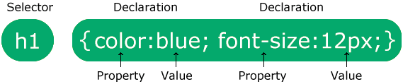

CSS Selectors
In CSS, the selector is the part of the ruleset that describes exactly what or which elements that the style rules will apply to. The elements that match the selector stipulated in the CSS ruleset will have the associated styles applied to them.
Basic Syntax
Before we dive into all the specific CSS selectors, it might be a good idea to go over the basic syntax for how to target a HTML element and how to apply some styling to it. Below is a useful diagram that helps to illustrate this a bit. The selector "targets" the exact HTML element that the declarations within curly braces will apply to. Multiple declarations within a set of curly braces make a declaration block. A declaration block with a selector is referred to as a ruleset.

Simple Selectors
Simple selectors target html tags quite simply (thus the name). Normally they are targeted either directly by their tag name or a ruleset associated with their class attribute or their ID attribute. An attribute is a piece of information that is given a value directly inline within the HTML tag it is to be applied to. Some examples of this include but are not limited to: class, id, href (for link destinations within anchor (<a> </a>)) tags.
The Element Selector
The element selector targets the exact HTML tag we want our style declarations to apply too. In our example to the right here we are targeting all p (paragraph) tags and telling the browser to center them and render the foreground (text) colour blue.
Try it in a codespace!
p
{
text-align: center;
color: blue;
}
#webpage-title
{
background-color: pink;
font-weight: bold;
}
The ID Selector
The id selector targets elements with an id attribute that is the same as the one stipulated as part of the CSS declaration block. The id selector is prefixed with a '#' and followed with the id value that it will apply to. Id values are unique and should only be used once per page for semantic reasons. For example "#webpage-title" should only be used to describe one HTML element per page (.html file).
Try it in a codespace!The Class Selector
The class selector targets elements based on whether the value of their class attribute matches the class attached to the CSS ruleset. Class selectors are prefixed with a '.' and followed by the class name. Classes provide an easy way to reuse style rules over multiple html tags by just including the CSS class name as the value to the HTML class attribute within the intended element to be targeted. This saves us from having to copy-paste or retype the same code over and over.
Try it in a codespace!
CSS Code
.big-bold-green
{
font-weight: bold;
font-size: 30px;
color: green;
}
HTML Code
<div class="big-bold-green">
hello world
</div>
CSS Code
.big
{
font-size: 30px;
}
.bold
{
font-weight: bold;
}
HTML Code
<div class="big bold">
hello world
</div>
The Class Selector (2 Classes)
We can actually expand on simply just selecting an element based on the value of its class attribute. In the example to the left we see that by separating the values within the value of the relavant element's class attribute with a space will allow us to apply the styling rules of multiple classes to the same element.
We can also experiment further with how we apply class selectors. For example, if we write "div .big" above the CSS declaration block, this would target elements only within div tags that have the class attribute value of "big". Furthermore you could also write "div.big" with no space above the CSS declaration block. This would target only div elements that have the class attribute value of "big" applied to them within their HTML tag. Feel free to have a go experimenting with some of these by using the online codespace provided for you!
Try it in a codespace!Grouping Selectors
Grouping selectors allow us to target multiple selectors at once and apply the same style rules to them all.
The Grouping Selector
Multiple selectors can be targeted and have the styles of a single CSS ruleset applied to all of them. This is done by separating the various selectors you want to target above the relevant CSS declaration block with a comma.
Try it in a codespace!
div, p, h1
{
color: green;
}
*
{
color: red;
}
body
{
color: blue;
}
The Universal Selector
The universal selector is a special selector but can also be viewed through the lens of a grouping selector. It is denoted by an asterisk at the top of the CSS declaration block. It directly targets every single element within the HTML document it applies to. This can be helpful in some ways but also unhelpful in others. The universal selector should be employed very carefully as, if used carelessly it can result in unexpected behaviours with regard to styling.
In our example to the left we have the universal selector targeting all elements and applying the foreground colour red to them. We also have a ruleset for the entire body tag stating that the foreground colour should be blue. Lets now imagine within the body we have a paragraph element. Normally, unless directly styled otherwise, the paragraph element would inherit the foreground colour blue from it's parent element, the body. However in this case, the paragraph element would actually appear red. This is because the universal selector is directly targeting the paragraph element and therefore overrides the principle of inherited styles from it's parent element.
Try it in a codespace!Combinator Selectors
Combinator selectors target elements based upon their relationship to other elements within the HTML file. In order to do this we use combinators. These are characters that when put between 2 elements, signify their relationship to one another and targets the rightmost element usually.
Descendant Combinator
The descendant combinator is denoted by a space character. It is used to target all right-side elements that are placed within the left-side elements. We can more simply refer to the right-side element as a descendant of the left-side element. In our example to the right the foreground colour blue will be applied to all paragraph tags that lie within (are descendants of) a section tag.
Try it in a codespace!
section p
{
color: blue;
}
section > p
{
color: red;
}
Child Combinator
The child combinator is denoted by a '>' character. It is used to target direct child descendants of the left-side element. A direct child descendant is an element that is within an element tag without being nested in any other element tags first. In our example on the left, all p tags directly within section tags are being targeted. Therefore if a p tag was within a div tag that was within a section tag the rule on the left would not apply styling to it. This may be a little hard to wrap your head around so feel free to use the codespace to help yourself understand this concept a little more.
Try it in a codespace!Next Sibling Combinator
The next sibling combinator is denoted by a '+' character. This targets the element that is the next direct sibling along to the element to the left. In our example on the right the div tag that directly follows any section tag and share the same parent element will have the background colour of blue applied to it.
Try it in a codespace!
section + div
{
background-color: yellow;
}
section ~ p
{
color: blue;
font-weight: bold;
}
Subsequent-Sibling Combinator
The subsequent sibling combinator is denoted by a '~' character. This is used to target all right-side elements that follow and are direct siblings of the element on the left. In our example here all p elements that are direct siblings, share the same parent element and follow the section tag will be rendered bold and blue.
Try it in a codespace!Pseudo Class Selectors
A pseudo class is a keyword prefixed by a ':' character that is added onto the end of the selector you wish to target. Pseudo classes allow you to target an element based on a special state or the position that they find themself in within the document relative to another element. Below we'll go through some common pseudo classes but a full list of pseudo class elements can be found here.
Interactive Pseudo Classes
Interactive pseudo classes apply styling to an element based upon how a user interracts with the element on the webpage.
- :hover - Targets an element when a user hovers their mouse over it
- :focus - Targets an element when a user selects it with their mouse or keyboard
- :active - Styles an interactive element when a user is in the process of clicking it. This element is most effective when the style ruleset is written after the corresponding ":hover" ruleset
- :link - Applies styling to a link that has not yet been visited
- :visited:visited - Applies styling to a link after it has been visited
Structural Pseudo Classes
Structural pseudo classes target elements based upon their position within the document relative to the element that the pseudo class is being applied to.
- :first-child - Targets the element prefixed to ":first-child" that is the first child descendant of another element.
- :nth-child(n) - Targets the element prefixed to ":nth-child(n)" that is the nth child descendant of another element.
- :last-child - Targets the element prefixed to ":last-child" that is the last child descendant of another element.
:hover Pseudo Class
The ":hover" pseudo class applies styling to an element only when it is hovered over by a user's mouse pointer. This is most helpful for styling interactive links and buttons on a webpage. In our example to the right, elements with the corresponding class "big-bold-blue" will become bigger, bolder and blue when hovered over by the user.
Try it in a codespace!
.big-bold-blue:hover
{
font-weight: bold;
font-size: 30px;
color: blue;
}
input.blue-button:focus
{
background-color: LightSkyBlue;
border: 2px solid red;
}
:focus Pseudo Class
The ":focus" pseudo class is used to apply styling to an element when it comes under focus. An element comes under focus when a user clicks on it using their mouse or navigates to it using their keyboard (usually the tab key). Having styling applied when interactive elements become focussed is a good way to make your website more inclusive and accessible. This is because some people are unable to use a mouse and therefore rely on keyboards to navigate websites. Applying some highlighting and bold colours will allow these users to navigate your site more easily and ensure a better experience for them.
Try it in a codespace!:first-child Pseudo Class
The ":first-child" pseudo class targets elements which are the first child descenant of their parent element. In our example to the left p elements that are the first child within their parent element will appear bold, larger, red and with a blue underline.
Try it in a codespace!
p:first-child
{
font-weight: bold;
font-size: 30px;
color: red;
text-decoration: underline blue solid 2px;
}
Pseudo-Element Selectors
Pseudo elements are keywords prefixed by "::". They are used to style a specific part of an element or in some cases add or modify content with regards to a specific part of the targeted element.
Text Pseudo Elements
Text pseudo elements allow us to apply styling to a specific part of text based content. Below are two commonly used text pseudo elements:
- ::first-letter - Targets the text element prefixed to "::fist-letter" and applies styling to its first letter
- ::first-line - Targets the text element prefixed to "::fist-line" and applies styling to its first line
More Pseudo Element Types
There are a variety of other pseudo elements that do things other than simply styling text. In particular "::after" and "::before" are referred to as content pseudo elements. They insert content either before or after the element they are suffixed to. Below are some more pseudo elements:
- ::after - Targets the element prefixed to "::after" and inserts content after it and applies styling to it
- ::before - Targets the element prefixed to "::before" and inserts content before it and applies styling to it
- ::backdrop - Targets the backdrop behind certain elements
- ::selection - Applies styling to an element when a user highlights it
- ::marker - Applies styling to the marker of a list item
::first-letter Pseudo Element
The "::first-letter" pseudo element targets the element it is suffixed to and applies styling to just the first letter of the targeted element. In the example to the right the first letter of all p elements will appear larger, bold and red.
Try it in a codespace!
p
{
font-size: 18px;
color: blue;
}
p::first-letter
{
font-size: 35px;
font-weight: bold;
color: red;
}
.character-1::before
{
content: "Character 1: "
}
.character-2::before
{
content: "Character 2: "
}
::before Pseudo Elements
The "::before" pseudo element adds content before the element it is suffixed to. The value of the content property within the "selector::before" ruleset is what is added before the element being targeted. In the example to the left, elements with the class "character-1" will have "Character 1: " inserted before and elements with the class "character-2" will have "Character 2 " inserted beforehand.
Try it in a codespace!::selection Pseudo Elements
The "::selection" pseudo element applies styling to an element when a user highlights it using the mouse. In the example to the right, "::selection" targets all elements and stipulates that when any element is highlighted the background colour turns yellow and the foreground colour turns red. However we also have a conflicting style rule! When div elements are highlighted their background colour is set to turn green and its foreground colour, white. Resultantly, the div::selection ruleset is applied to divs here as it has higher specificity weight than "::selection". Feel free to learn more on our CSS style hierarchy page.
Try it in a codespace!
::selection
{
background-color: yellow;
color: red;
}
div::selection
{
background-color: green;
color: white;
}
#red-list li::marker
{
color: green;
font-size: 30px;
}
::marker Pseudo Elements
The "::marker" pseudo element applies styling to the list item markers of the element to which is is suffixed to. In our example to the left, the list with the id "red-list" will have the markers of its li elements rendered in a large 30 pixel size and in the colour green.
Try it in a codespace!Attribute Selectors
Attribute selectors target an element that based on the presence and/or value of a specific attribute that's defined within it's HTML tag. The attribute, and possibly it's value too, is enclosed in square brackets following the name of the element it is targeting. The character 'i' can be included right before the closing square bracket in order to match attribute values in a non-case sensitive way. Conversely, 's' can be added before the closing square bracket to ensure case sensitive functionality.
New Syntax Guidance: Links
You may be about to see some syntax below (particularly in the codespaces) that you are not yet familiar with. Please do not panic. In particular lets quickly go through some of the syntax you may see within the opening <a> (link) tags. target="_blank" tells the browser that the link that the value of the href (hypertext reference) attribute points to should be opened in a new tab. rel="noopener noreferrer" are two values to the rel (relationship) attribute that server to keep us a little safer on the web when opening links to external websites.
"noopener" tells the browser to disallow the webpage that we are being directed to from using a function that returns a reference to the page that opened it. This protects against potentially malicious external sites from tampering with our document or displayed windows in anyway. This protects our users from scams or any other online harm online.
"noreferrer" tells the browser to omit the Referer HTTP header when being directed to the link that "noreferrer" has been included in. This prevents from an external website from seeing the link of the page from which the user has been directed from. This protects privacy and ensures extra safety surfing the web. In modern browsers when target="_blank" is stipulated rel="noopener" tends to be automatically applied. Furthermore when rel="noreferrer" is stipulated "noopener" is also automatically applied along with it. However not all users will be using a modern browser and it is generally good practice to include when directing users of our website to external links that aren't controlled by ourselves. Feel free to read more about "noopener" and "noreferrer" if you're interested.
[attribute] Selector
This selector targets all elements that have an instance of the attribute defined within their opening HTML tag. In our example to the right, all anchor tags with the href (hyper-text reference) attribute present will be rendered larger, bold and red. This example would essentially target all links as they all have a href value in order to direct the user to the correct destination. However a link's target tag, which specifies whether a link is to open in a new window or tab, can also be targeted here too!
Try it in a codespace!
a[href]
{
color: red;
font-size: 35px;
font-weight: bold;
}
a[href="https://www.bbc.co.uk/sport"]
{
color: yellow;
font-weight: bold;
font-size: 18px;
text-decoration: none;
}
a[href="https://news.sky.com/uk"]
{
color: red;
font-size: 30px;
text-decoration: underline blue wavy 2px;
}
[attribute="value"] Selector
This selector targets elements not based on whether an attribute is simply present or not, but also on the value of that element. As mentioned above 'i' or 's' can be included right before the closing square bracket to trigger either a case insensitive or case sensitive search. In the example on the left we see style rules for two anchor tags both with present href attributes. However we can see that one selector seems to be matching to a link that takes you to the BBC sport website, and another that takes you to the Sky news website. Resultantly these 2 links will be styled differently by the browser.
Try it in a codespace![attribute~="value"] Selector
This selector targets elements with an attribute present that carries a specific value. The value can either be the exact word stipulated within quotaions in the bracket or include the word as a part of a list separated by whitespace. However it will not recognise variations of the word or the word connected by characters such as '-' and '_'. For example on the right is code that targets paragraph elements with the title attribute that includes the word "important". Rather ironically a p element with the title "not important" would be targeted while one with the title "very-important" or "importantest" or "veryveryimportant" would not be targeted.
Try it in a codespace!
p[title~="important"]
{
font-weight: bold;
color: red;
}
p[class|="highlight"]
{
background-color: pink;
}
[attribute|="value"] Selector
This selector targets elements with the attribute mentioned with a value exactly matching that of the value in the square brackets or the value within the square brackets immediately followed by a '-'. In our example to the left p elements with the class value "highlight" or "highlight-..." will be targeted and styled to appear with a pink background.
Try it in a codespace![attribute^="value"] Selector
This selector targets elements with the attribute mentioned that has a value that is prefixed by (starts with) the value stipulated within our square brackets. For example on the right the code targets all elements that have a class value that begins with "big". Resultantly, elements with a class of "big-bold" and "big-blue" will have the stipulated large size font, boldness and underlining applied to them.
Try it in a codespace!
[class^="big"]
{
font-weight: bold;
color: red;
font-size: 30px;
text-decoration: underline blue solid 1px;
}
[class$="big"]
{
font-weight: bold;
color: red;
font-size: 30px;
text-decoration: underline blue solid 1px;
}
[attribute$="value"] Selector
This selector is similar to the one above except that it works in the opposite way. The selector targets elements with the attribute mentioned that has a value that is suffixed by (ends with) the value stipulated within our square brackets. For example on the left the code targets all elements that have a class value that ends with "big". Resultantly, elements with a class of "bold-big" and "blue-big" will have the stipulated large size font, boldness and underlining applied to them.
Try it in a codespace![attribute*="value"] Selector
This selector is perhaps the most general and flexible of the last ones that we've seen. The selector targets elements with the attribute and its value mentioned in the square brackets. The value in square brackets can appear anywhere within the element attribute's text string value making this the most flexible of the partial matching attribute selectors. In our example to the right, we are targeting all p elements with a class value that involves the string "big" anywhere within it.
Try it in a codespace!
p[class*="big"]
{
font-weight: bold;
color: red;
font-size: 30px;
text-decoration: underline blue solid 1px;
}